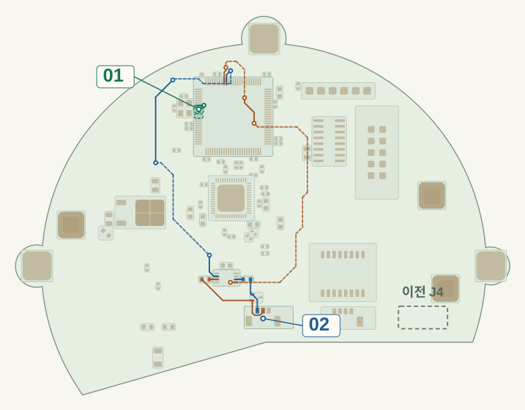
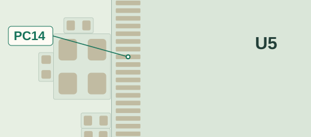
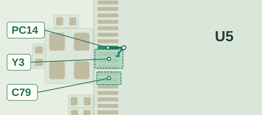
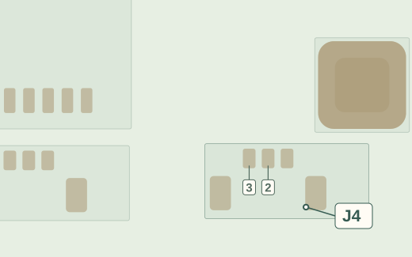
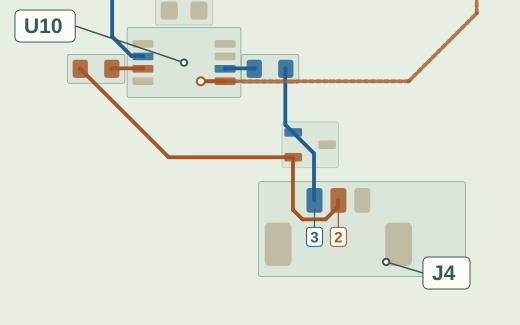

RTC로 잰 시간만큼 보드 시계를 이어 간다
저장한 보드 시각+RTC로 잰 경과 시간=복원할 보드 시각
펌웨어는 저장 기록이 유효하고 RTC가 계속 동작했을 때 이 방법을 쓴다.
기존 보드는 PTP로 라이다 시계를 맞췄다. 앱에서 이 시각으로 각도를 찾으려면, 재부팅 뒤에도 보드의 기준 시각을 되살려야 했다.
라이다가 점을 찍은 순간의 받침 각도를 엔코더 기록에서 찾아야 한다. 두 시계의 시작값이나 속도가 다르면 기록 시각이 어긋난다. 수신 지연이나 지터가 생기면 앱이 읽은 때도 측정 시각과 달라진다.
실제 벽앱이 그린 점
각도 차이
기존 앱은 점과 각도를 합칠 때 그 측정 시각을 쓰지 않았다.
회전 중 수신이 밀리면 먼저 찍은 점에 나중 각도가 붙어 위치가 어긋날 수 있다. 그래서 라이다가 점을 찍은 시각의 각도를 찾기로 했다.
기존 보드는 STM32F407의 이더넷 하드웨어 시계를 PTP 기준으로 썼다. 초기에는 제어 칩만 리셋하면 보드 시계가 0초로 돌아갔고, 켜져 있던 라이다 시계는 계속 갔다.
이 라이다는 PTP로 맞추는 중에 시계를 뒤로 돌리지 않아, 처음에는 라이다 시계도 다시 시작시켰다.
다음에는 보드가 저장한 시각에 부팅 후 경과와 60초 여유를 더했다. 보드가 멈춰 있던 시간이 계산에 빠져 있어, 소프트웨어 실험에서 정지 시간을 바꾸자 보드 시계가 라이다보다 앞서기도, 뒤처지기도 했다.
보드 시작값그때의 라이다 시각
PTP로 라이다와 보드의 시계를 맞추면 두 기록을 같은 시간축에 놓을 수 있다. 시계 차이가 충분히 작으면, 점을 찍은 시각 앞뒤의 엔코더 기록에서 시간 비율로 선형 보간해 그때의 각도를 구할 수 있다.
시험용 앱에서 이 방식을 적용했다. 각도 기록이 끊긴 구간은 건너뛰고, 장치 시각이 뒤로 가면 이전 각도 기록을 비운다. 실제 패킷을 재생해 끊긴 수신이 돌아온 뒤 점과 각도를 다시 맞추는 것을 확인했다.
새 PCB 설계에 저속 발진기(LSE)를 넣었다. 보드 전원이 유지되면 제어 칩이 재부팅되는 동안에도 이 발진기가 칩 안의 보조 시계(RTC)를 계속 돌린다.
펌웨어는 평소 보드의 PTP 시각과 RTC 시각을 함께 저장한다. 재부팅 뒤에는 저장한 PTP 시각에 RTC로 잰 경과 시간을 더해 보드 시계를 다시 시작한다.
새 설계에서 보드 시계가 계속 가고 LAN의 PTP 통신만 끊기면, 라이다의 시간 입력을 별도 단자(J4)로 바꿔 같은 시각을 받을 수 있다. 제어 칩이 재부팅되는 동안에는 두 경로의 송신이 멈춘다.
펌웨어는 저장 기록이 유효하고 RTC가 계속 동작했을 때 이 방법을 쓴다.
RTC가 준비 중이면 기다린다. 복원에 쓸 수 없으면 메모리(SRAM)에 남은 유효한 시각으로 위 계산을 한다. 유효한 기록이 없으면 보드 시각을 미확정으로 둔다.
두 시계가 다시 맞을 때까지 결합을 보류한다. 필요할 때 라이다를 다시 시작하는 방안도 검토했다.
보드 전원이 끊기면 RTC도 멈춘다. 라이다만 계속 켜져 있었다면 새 기준에 맞을 때까지 결합을 보류한다. 필요하면 라이다를 다시 시작해 동기를 확인하는 운용안이다.

01 · LSE 발진기보조 시계(RTC)의 기준 신호를 공급한다.
02 · J4 시간 출력라이다에 보드 시각을 보내는 두 번째 경로다.
앞면 기준으로 그렸다. 색 점선은 뒷면 배선이고 점선 상자는 J4의 이전 위치다.




PPS · 초가 바뀌는 순간NMEA · 그때의 시각
PCB는 제작 파일까지 준비했고, 펌웨어의 시각 복원과 시간 신호 출력은 소프트웨어로 시험했다.
재부팅이나 연결 끊김을 감지하면 이전 기록을 따로 둔다.
보드 시각이 복원돼 계속 가는지, 라이다가 보드에 다시 동기됐는지 확인한다.
두 조건을 확인한 뒤에 들어온 점과 각도부터 짝을 맞춘다.
새 PCB를 제작한 뒤 라이다를 켜 둔 채 제어 칩만 재부팅한다. 예를 들어 회전부 표식이 기준점을 지나는 순간을 별도 센서로 잡고, 그 통과를 담은 라이다와 엔코더 기록의 시각을 비교한다.
두 기록의 시각 차이 목표는 100 µs 이내다. 운전 중에 점과 각도를 다시 써도 된다고 판단할 기준은 별도로 정한다.